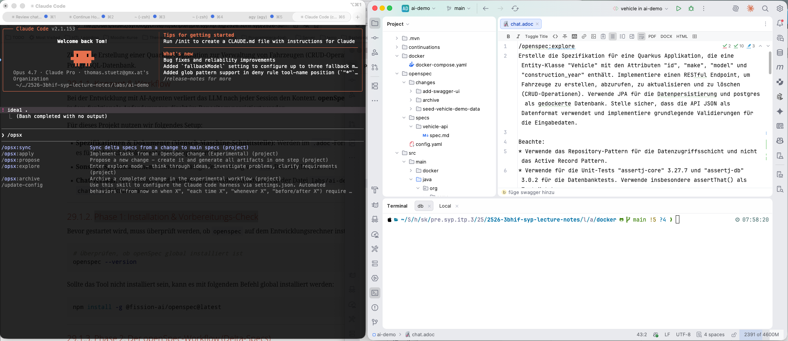

Dieses Tutorial beschreibt die schrittweise Durchführung eines Software-Entwicklungs-Projekts im Verzeichnis labs/ai-demo unter der Verwendung des Frameworks openSpec und eines AI-Agenten (wie z. B. Claude Code oder Antigravity).
Ziel ist die Erstellung einer Quarkus-Applikation zur Verwaltung von Fahrzeugen (CRUD-Operationen) mit einer PostgreSQL-Datenbank.
1. Konzept & Workflow
Bei der Entwicklung mit AI-Agenten verliert das LLM nach jeder Session den Kontext. openSpec löst dieses Problem, indem funktionale Anforderungen direkt im Repository persistiert werden.
Dabei wird die Software konsequent in kleinen Schritten (Inkrementen) entwickelt. Jedes dieser Inkremente wird vorher sauber spezifiziert, bevor mit der eigentlichen Implementierung begonnen wird. So können Vereinbarungen aus dem Scrum-Entwicklungsprozess (wie z. B. die Definition of Done (DoD)) exakt eingehalten werden. Dieser Ansatz ermöglicht eine klare Strukturierung des Entwicklungsprozesses und stellt sicher, dass alle Beteiligten – Mensch wie Maschine – ein gemeinsames Verständnis der Anforderungen und Ziele haben, noch bevor Code geschrieben wird.
Für dieses Projekt nutzen wir folgendes Setup:
-
Spezifikationen (Specs): Alle funktionalen und technischen Spezifikationen werden im
.md-Format (Markdown) verfasst. -
Chat-Verlauf: Alle Prompts und Interaktionen werden in der Datei
labs/ai-demo/chat.md(oderchat.adoc) dokumentiert.

Sämtliche Eingaben werden links im AI-Agenten-Fenster durchgeführt. Rechts kann man sich die Ergebnisse in einem beliebigen Editor bzw. einer IDE ansehen. Wir verwenden JetBrains, da es eine sehr gute Unterstützung bietet:
-
für Datenbanken (Zugriff auf DB und Erstellung von ER-Diagrammen)
-
für den Zugriff auf Endpoints (z. B. REST, GraphQL, …) mit dem "JetBrains HTTP-Client"
-
zur Ausführung der Tests (z. B. Unit-Tests, Integrationstests, …) mit JUnit
2. Phase 1: Installation & Vorbereitungs-Check
Bevor gestartet wird, muss überprüft werden, ob openspec auf dem Entwicklungsrechner installiert ist.
|
Die Installation und Ausführung von |
# Überprüfen, ob openSpec global installiert ist
openspec --versionSollte das Tool nicht installiert sein, kann es mit folgendem Befehl global installiert werden:
npm install -g @fission-ai/openspec@latest3. Phase 2: Der openSpec-Workflow (Delta-Specs)
Der Entwicklungsprozess wird über vordefinierte Phasen gesteuert, die als Befehle in den Chat eingegeben werden. Jedes Feature durchläuft diese Phasen als Spec-Delta.
|
Kein sofortiger Code-Start! Der AI-Agent darf nicht sofort mit der Implementierung beginnen. Zuerst wird die Spezifikation erstellt, verfeinert und im Detail mit dem Entwickler besprochen. Erst nach der expliziten Freigabe des Proposals durch den Entwickler startet die Umsetzung. Das stellt sicher, dass die Anforderungen präzise definiert sind und Missverständnisse vor dem Schreiben von Code ausgeräumt werden. |
3.1. 1. /opsx:explore
In dieser Phase analysiert der AI-Agent den aktuellen Zustand des Projekts, liest bestehende Anforderungen und verschafft sich den notwendigen Kontext.
/opsx:explore
Erstelle die Spezifikation für eine Quarkus Applikation, die eine Entity-Klasse "Vehicle" mit den Attributen "id", "make", "model" und "construction_year" enthält. Implementiere einen RESTful Endpoint, um Fahrzeuge zu erstellen, abzurufen, zu aktualisieren und zu löschen (CRUD-Operationen). Verwende JPA für die Datenpersistierung und postgres als gedockerte Datenbank. Stelle sicher, dass die API JSON als Datenformat verwendet und implementiere grundlegende Validierungen für die Eingabedaten.3.2. 2. /opsx:propose
Der Agent erstellt ein Proposal (Änderungsvorschlag) unter changes/ mit dem geplanten Vorgehen und dem Spec-Delta.
Review & Abstimmung: Der Entwickler prüft dieses Proposal sorgfältig und diskutiert es bei Bedarf mit dem Agenten. Dies ist das wichtigste Kontrollorgan, um sicherzustellen, dass keine Fehlentwicklungen stattfinden.
3.3. 3. /opsx:apply
Nach der Freigabe des Proposals (Freigabe des Spec-Deltas und des Umsetzungsplans) durch den Entwickler beginnt die eigentliche Implementierung. Der Agent schreibt den Java-Code, die Konfigurationsdateien und die Docker-Compose-Konfiguration.
3.4. 4. /opsx:sync
In dieser Phase wird überprüft, ob die Implementierung exakt mit den Spezifikationen übereinstimmt und alle Tests grün sind. Dabei wird die Gesamtspezifikation um die jeweilige Delta-Spezifikation (Spec-Delta) erweitert, wodurch eine konsistente und vollständige Spezifikation des Gesamtsystems entsteht.
3.5. 5. /opsx:archive
Die abgeschlossenen Änderungen werden in die lebende Spezifikation übernommen und der temporäre changes/-Ordner wird aufgeräumt.
3.6. 6. Erstellung eines Continuation Prompts
Um bei einer neuen Session sofort wieder produktiv starten zu können, wird im Ordner continuations/ ein Continuation Prompt erstellt. Bei einem Neustart kann der Kontext über /clear gelöscht und der Continuation-Prompt eingelesen werden, was Token spart und Fehlinterpretationen verhindert.
update the continuation prompt in folder "continuations"3.7. 7. commit und push
Die Schritte commit und push werden nach der Erstellung bzw. dem Update des Continuation Prompts durchgeführt. Dadurch werden alle Änderungen – einschließlich des aktualisierten Continuation Prompts – direkt im Repository gesichert. Dies ermöglicht eine lückenlose Nachverfolgung der Änderungen und stellt sicher, dass Spezifikationen, Implementierungen und Continuation Prompts im Repository stets auf dem neuesten Stand und konsistent sind.
Wenn der Entwickler dem Agenten den Befehl erteilt, die Änderungen zu committen, vergibt der Agent selbstständig oft sehr präzise und sinnvolle Commit-Messages (z. B. nach dem Conventional Commits Standard), die den tatsächlichen Änderungsumfang beschreiben. Auch das Pushen der Änderungen auf das Remote-Repository wird direkt vom AI-Agenten ausgeführt.
commitpush4. Phase 3: Technische Implementierung
Im Folgenden sind die Kernkomponenten des erstellten Quarkus-Projekts detailliert aufgeführt.
Technische Implementierungsdetails einblenden
=== 1. Docker-Datenbank-Konfiguration (docker/docker-compose.yaml)
Die PostgreSQL-Datenbank läuft in Version 18 in einem Docker-Container.
services:
postgres:
image: postgres:18
container_name: postgres-db
environment:
POSTGRES_DB: db
POSTGRES_USER: app
POSTGRES_PASSWORD: app
ports:
- "5432:5432"
volumes:
- pgdata:/var/lib/postgresql
volumes:
pgdata:=== 2. JPA-Entity-Klasse (Vehicle.java)
Die Entity-Klasse verwendet spezifische Tabellen- und Spaltenpräfixe (AI_ bzw. V_) und Validierungs-Annotations sowie OpenAPI-Metadaten.
package org.acme.vehicle.entity;
import jakarta.persistence.Column;
import jakarta.persistence.Entity;
import jakarta.persistence.GeneratedValue;
import jakarta.persistence.GenerationType;
import jakarta.persistence.Id;
import jakarta.persistence.SequenceGenerator;
import jakarta.persistence.Table;
import jakarta.validation.constraints.Min;
import jakarta.validation.constraints.NotBlank;
import jakarta.validation.constraints.NotNull;
import org.eclipse.microprofile.openapi.annotations.media.Schema;
@Entity
@Table(name = "AI_VEHICLE")
@Schema(description = "A vehicle record")
public class Vehicle {
@Id
@GeneratedValue(strategy = GenerationType.SEQUENCE, generator = "vehicle_seq")
@SequenceGenerator(name = "vehicle_seq", sequenceName = "vehicle_id_seq", allocationSize = 1)
@Column(name = "V_ID")
@Schema(readOnly = true, example = "1", description = "Server-generated primary key")
private Long id;
@NotBlank(message = "Make must not be blank")
@Column(name = "V_MAKE", nullable = false)
@Schema(example = "Volkswagen", description = "Manufacturer of the vehicle", required = true)
private String make;
@NotBlank(message = "Model must not be blank")
@Column(name = "V_MODEL", nullable = false)
@Schema(example = "Golf VII", description = "Model designation", required = true)
private String model;
@NotNull(message = "Construction year must not be null")
@Min(value = 1886, message = "Construction year must be 1886 or later")
@Column(name = "V_CONSTRUCTION_YEAR", nullable = false)
@Schema(example = "2015", description = "Year the vehicle was manufactured (>= 1886)", required = true)
private Integer construction_year;
public Vehicle() {
}
public Vehicle(String make, String model, Integer construction_year) {
this.make = make;
this.model = model;
this.construction_year = construction_year;
}
// Getter and Setter
public Long getId() { return id; }
public void setId(Long id) { this.id = id; }
public String getMake() { return make; }
public void setMake(String make) { this.make = make; }
public String getModel() { return model; }
public void setModel(String model) { this.model = model; }
public Integer getConstruction_year() { return construction_year; }
public void setConstruction_year(Integer construction_year) { this.construction_year = construction_year; }
}=== 3. Repository-Schicht (VehicleRepository.java)
Zur Datenabfrage wird das Repository-Pattern (über PanacheRepository) und nicht das Active-Record-Pattern verwendet.
package org.acme.vehicle.repository;
import io.quarkus.hibernate.orm.panache.PanacheRepository;
import jakarta.enterprise.context.ApplicationScoped;
import org.acme.vehicle.entity.Vehicle;
@ApplicationScoped
public class VehicleRepository implements PanacheRepository<Vehicle> {
}=== 4. REST-Endpoint (VehicleResource.java)
Der RESTful Endpoint ist unter /api/vehicles erreichbar und stellt CRUD-Operationen unter Verwendung von JSON bereit.
package org.acme.vehicle.resource;
import jakarta.inject.Inject;
import jakarta.transaction.Transactional;
import jakarta.validation.Valid;
import jakarta.ws.rs.*;
import jakarta.ws.rs.core.MediaType;
import jakarta.ws.rs.core.Response;
import jakarta.ws.rs.core.Response.Status;
import java.net.URI;
import java.util.List;
import org.acme.vehicle.entity.Vehicle;
import org.acme.vehicle.repository.VehicleRepository;
import org.eclipse.microprofile.openapi.annotations.Operation;
import org.eclipse.microprofile.openapi.annotations.responses.APIResponse;
import org.eclipse.microprofile.openapi.annotations.tags.Tag;
@Path("/api/vehicles")
@Produces(MediaType.APPLICATION_JSON)
@Consumes(MediaType.APPLICATION_JSON)
@Tag(name = "Vehicles", description = "CRUD operations on vehicles")
public class VehicleResource {
@Inject
VehicleRepository repository;
@GET
@Operation(summary = "List all vehicles")
@APIResponse(responseCode = "200", description = "Array of vehicles")
public List<Vehicle> list() {
return repository.listAll();
}
@GET
@Path("/{id}")
@Operation(summary = "Get a vehicle by ID")
@APIResponse(responseCode = "200", description = "Vehicle found")
@APIResponse(responseCode = "404", description = "Vehicle not found")
public Response get(@PathParam("id") Long id) {
return repository.findByIdOptional(id)
.map(vehicle -> Response.ok(vehicle).build())
.orElseGet(() -> Response.status(Status.NOT_FOUND).build());
}
@POST
@Transactional
@Operation(summary = "Create a vehicle")
@APIResponse(responseCode = "201", description = "Vehicle created")
public Response create(@Valid Vehicle vehicle) {
repository.persist(vehicle);
return Response.created(URI.create("/api/vehicles/" + vehicle.getId()))
.entity(vehicle)
.build();
}
@PUT
@Path("/{id}")
@Transactional
@Operation(summary = "Update an existing vehicle")
public Response update(@PathParam("id") Long id, @Valid Vehicle updatedVehicle) {
return repository.findByIdOptional(id)
.map(vehicle -> {
vehicle.setMake(updatedVehicle.getMake());
vehicle.setModel(updatedVehicle.getModel());
vehicle.setConstruction_year(updatedVehicle.getConstruction_year());
return Response.ok(vehicle).build();
})
.orElseGet(() -> Response.status(Status.NOT_FOUND).build());
}
@DELETE
@Path("/{id}")
@Transactional
@Operation(summary = "Delete a vehicle")
public Response delete(@PathParam("id") Long id) {
boolean deleted = repository.deleteById(id);
if (deleted) {
return Response.noContent().build();
} else {
return Response.status(Status.NOT_FOUND).build();
}
}
}=== 5. Quarkus-Konfiguration (src/main/resources/application.properties)
Die Anbindung an die PostgreSQL-Datenbank und die Aktivierung von Swagger UI für die interaktive Dokumentation.
# Datasource configuration
quarkus.datasource.db-kind=postgresql
quarkus.datasource.username=app
quarkus.datasource.password=app
quarkus.datasource.jdbc.url=jdbc:postgresql://localhost:5432/db
# Hibernate ORM configuration
quarkus.hibernate-orm.database.generation=drop-and-create
quarkus.hibernate-orm.log.sql=true
quarkus.hibernate-orm.sql-load-script=no-file
%dev.quarkus.hibernate-orm.sql-load-script=import.sql
# OpenAPI / Swagger UI
quarkus.swagger-ui.always-include=true
quarkus.smallrye-openapi.info-title=Vehicle API
quarkus.smallrye-openapi.info-version=1.0.0=== 6. SQL-Initialisierung (src/main/resources/import.sql)
Hier werden Standard-Testdaten beim Start im %dev-Profil geladen:
INSERT INTO AI_VEHICLE (V_ID, V_MAKE, V_MODEL, V_CONSTRUCTION_YEAR) VALUES (1, 'Volkswagen', 'Golf VII', 2015);
INSERT INTO AI_VEHICLE (V_ID, V_MAKE, V_MODEL, V_CONSTRUCTION_YEAR) VALUES (2, 'BMW', 'M3 E46', 2003);
INSERT INTO AI_VEHICLE (V_ID, V_MAKE, V_MODEL, V_CONSTRUCTION_YEAR) VALUES (3, 'Tesla', 'Model 3', 2022);
ALTER SEQUENCE vehicle_id_seq RESTART WITH 100;5. Phase 4: Validierung & Testing
Die Qualitätssicherung erfolgt über zwei Arten von Tests, wobei Assertions konsequent mit assertThat() durchgeführt werden.
Validierungs- und Testing-Details einblenden
=== 1. Integrationstest der REST-API mit REST-Assured (VehicleResourceTest.java)
package org.acme.vehicle.resource;
import static io.restassured.RestAssured.given;
import static org.assertj.core.api.Assertions.assertThat;
import io.quarkus.test.junit.QuarkusTest;
import io.restassured.http.ContentType;
import io.restassured.response.Response;
import org.acme.vehicle.entity.Vehicle;
import org.junit.jupiter.api.MethodOrderer;
import org.junit.jupiter.api.Order;
import org.junit.jupiter.api.Test;
import org.junit.jupiter.api.TestMethodOrder;
@QuarkusTest
@TestMethodOrder(MethodOrderer.OrderAnnotation.class)
public class VehicleResourceTest {
private static Long createdId;
@Test
@Order(1)
public void testCreateVehicle() {
Vehicle vehicle = new Vehicle("Tesla", "Model S", 2022);
Response response = given()
.contentType(ContentType.JSON)
.body(vehicle)
.when()
.post("/api/vehicles")
.then()
.statusCode(201)
.extract()
.response();
Vehicle created = response.as(Vehicle.class);
assertThat(created).isNotNull();
assertThat(created.getId()).isNotNull();
assertThat(created.getMake()).isEqualTo("Tesla");
createdId = created.getId();
}
@Test
@Order(2)
public void testGetVehicle() {
Response response = given()
.when()
.get("/api/vehicles/" + createdId)
.then()
.statusCode(200)
.extract()
.response();
Vehicle vehicle = response.as(Vehicle.class);
assertThat(vehicle.getMake()).isEqualTo("Tesla");
}
@Test
@Order(3)
public void testCreateValidationFail() {
Vehicle invalid = new Vehicle("", "Model 3", 1800); // Fails due to blank make and year < 1886
given()
.contentType(ContentType.JSON)
.body(invalid)
.when()
.post("/api/vehicles")
.then()
.statusCode(400);
}
}=== 2. Datenbank-Zustandstest mit AssertJ-DB (VehicleDatabaseTest.java)
Mit assertj-db wird der Zustand der Datenbank direkt geprüft, um sicherzustellen, dass Hibernate die Entitäten korrekt speichert.
package org.acme.vehicle.repository;
import io.quarkus.test.junit.QuarkusTest;
import jakarta.inject.Inject;
import jakarta.transaction.Transactional;
import javax.sql.DataSource;
import org.acme.vehicle.entity.Vehicle;
import org.assertj.db.type.AssertDbConnection;
import org.assertj.db.type.AssertDbConnectionFactory;
import org.assertj.db.type.Table;
import static org.assertj.db.api.Assertions.assertThat;
import org.junit.jupiter.api.Test;
@QuarkusTest
public class VehicleDatabaseTest {
@Inject
DataSource dataSource;
@Inject
VehicleRepository repository;
@Test
@Transactional
public void testDatabaseState() {
AssertDbConnection connection = AssertDbConnectionFactory.of(dataSource).create();
Table table = connection.table("AI_VEHICLE").build();
int initialRows = table.getRowsList().size();
Vehicle vehicle = new Vehicle("Audi", "A4", 2021);
repository.persistAndFlush(vehicle);
Table updatedTable = connection.table("AI_VEHICLE").build();
assertThat(updatedTable)
.hasNumberOfRows(initialRows + 1)
.row(initialRows)
.value("V_MAKE").isEqualTo("Audi")
.value("V_MODEL").isEqualTo("A4")
.value("V_CONSTRUCTION_YEAR").isEqualTo(2021);
repository.delete(vehicle);
}
}6. Phase 5: Starten des Projekts
# 1. Terminal: Docker-Datenbank starten
cd labs/ai-demo/docker
docker compose up -d
# 2. Terminal: Quarkus-App im Dev-Modus starten
cd labs/ai-demo
./mvnw clean quarkus:dev-
Die API ist erreichbar unter:
http://localhost:8080/api/vehicles -
Swagger UI ist im Dev-Modus erreichbar unter:
http://localhost:8080/q/swagger-ui/
7. Konvertierung in das AsciiDoc-Format (.adoc)
|
Obwohl in diesem Projekt alle Spezifikationen standardmäßig im |